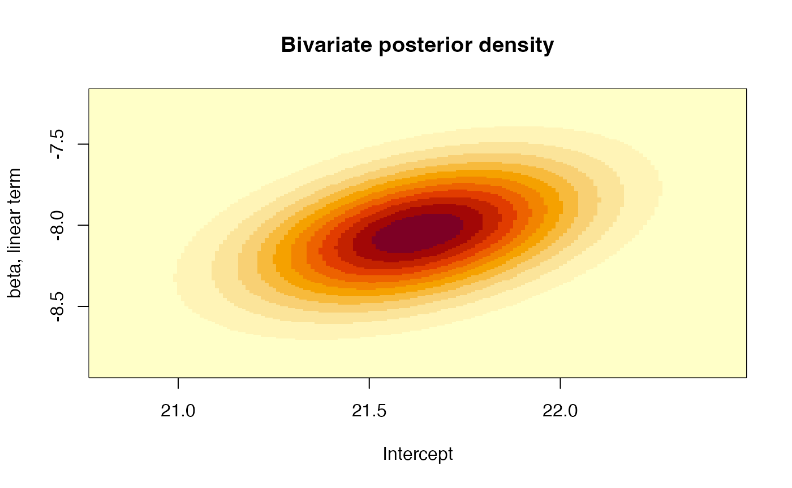
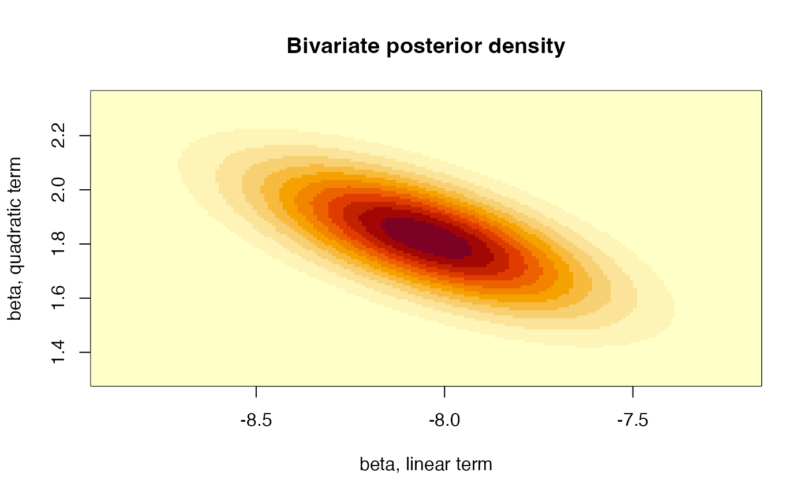

Fitting a Bayesian polynomial model
## Load some required libraries
library(extraDistr) # functions related with the inverse-Gamma distribution
library(LaplacesDemon) # functions related with the multivariate Student dist.##
## Attaching package: 'LaplacesDemon'## The following objects are masked from 'package:extraDistr':
##
## dbern, dcat, ddirichlet, dgpd, dgpois, dinvchisq, dinvgamma,
## dlaplace, dpareto, pbern, plaplace, ppareto, qbern, qcat, qlaplace,
## qpareto, rbern, rcat, rdirichlet, rgpd, rinvchisq, rinvgamma,
## rlaplace, rparetoIntroduction
The Auto dataset of the ISLR library
contains information on several characteristics of 392 vehicles.
Specifically, we will want to model the relationship between the
efficiency of these cars, measured as the number of miles they are able
to travel per gallon of fuel (variable mpg), and their
power, quantified by the variable horsepower.
We begin by visualizing the relationship between the two variables

The relationship between both variables is clearly nonlinear, possibly quadratic, so we will fit a (Bayesian) quadratic regression model to this data set to describe this relationship.
Fitting a (frequentist) quadratic regression model
We are going to fit now a regression model which describes a
quadratic function of horsepower following a frequentist
approach and tools. Previously, we will standardize
horsepower in order to obtain more manageable estimates of
the coefficients of the model and their variability. Let’s do it:
# Standardization of horsepower
Auto$horse.std <- (Auto$horsepower - mean(Auto$horsepower))/sd(Auto$horsepower)
# Quadratic fit
Fit1 <- lm(mpg ~ poly(horse.std, degree = 2, raw = TRUE), data = Auto)
summary(Fit1)##
## Call:
## lm(formula = mpg ~ poly(horse.std, degree = 2, raw = TRUE), data = Auto)
##
## Residuals:
## Min 1Q Median 3Q Max
## -14.7135 -2.5943 -0.0859 2.2868 15.8961
##
## Coefficients:
## Estimate Std. Error t value Pr(>|t|)
## (Intercept) 21.6274 0.2852 75.83 <2e-16
## poly(horse.std, degree = 2, raw = TRUE)1 -8.0478 0.2953 -27.25 <2e-16
## poly(horse.std, degree = 2, raw = TRUE)2 1.8231 0.1809 10.08 <2e-16
##
## (Intercept) ***
## poly(horse.std, degree = 2, raw = TRUE)1 ***
## poly(horse.std, degree = 2, raw = TRUE)2 ***
## ---
## Signif. codes: 0 '***' 0.001 '**' 0.01 '*' 0.05 '.' 0.1 ' ' 1
##
## Residual standard error: 4.374 on 389 degrees of freedom
## Multiple R-squared: 0.6876, Adjusted R-squared: 0.686
## F-statistic: 428 on 2 and 389 DF, p-value: < 2.2e-16
# Plot of the fitted curve
plot(mpg ~ horse.std, data = Auto)
where <- seq(min(Auto$horse.std), max(Auto$horse.std), length = 100)
lines(where, predict(Fit1, data.frame(horse.std = where)), col = 2, lwd = 2) The fitted curve adequately describes the relationship between both
variables. Moreover, every term of the polynomial seem to have a
significant effect, that is, all of them seem necessary to appropriately
describe the variation of
The fitted curve adequately describes the relationship between both
variables. Moreover, every term of the polynomial seem to have a
significant effect, that is, all of them seem necessary to appropriately
describe the variation of mpg as a function of
horse.std.
Fitting a Bayesian quadratic regression model
Let us now fit the Bayesian version of the above model. We will use, for convenience, Jeffreys’ prior for . Therefore, we have:
plot(seq(13, 25, by = 0.1),
dinvgamma(seq(13, 25, by = 0.1), (nrow(Auto)-3)/2,sum(residuals(Fit1)^2)/2),
type = "l", ylab = "Posterior density", xlab = "sigma2")This distribution yields a posterior mean of and a mode of , that is:
## [1] 19.23005## [1] 19.03332## [1] 19.13118The Bayesian posterior point estimates are quite close to the frequentist estimate, although the posterior distribution of allows to explore also the uncertainty of this parameter.
As mentioned in the theoretical session,
has the following marginal posterior distribution:
The mean of this distribution coincides with the coefficients of the
linear model Fit1, and has as variance-covariance
matrix:
X <- cbind(rep(1, dim(Auto)[1]), Auto$horse.std, Auto$horse.std^2)
VarCov <- solve(t(X)%*%X)*sum(residuals(Fit1)^2)/(nrow(Auto)-3)
VarCov## [,1] [,2] [,3]
## [1,] 0.08134909 0.03529659 -0.03262829
## [2,] 0.03529659 0.08720960 -0.03538686
## [3,] -0.03262829 -0.03538686 0.03271174
# Correlation between coefficients
cov2cor(VarCov)## [,1] [,2] [,3]
## [1,] 1.0000000 0.4190581 -0.6325082
## [2,] 0.4190581 1.0000000 -0.6625338
## [3,] -0.6325082 -0.6625338 1.0000000Moreover, we can also plot the bivariate distribution for each pair of coefficients, for example, the joint posterior distribution for the intercept and the linear term:
# Joint posterior distribution of the coefficients for the intercept and the
# linear term
xlims <- c(Fit1$coefficients[1]-3*sqrt(VarCov[1,1]),
Fit1$coefficients[1]+3*sqrt(VarCov[1,1]))
ylims <- c(Fit1$coefficients[2]-3*sqrt(VarCov[2,2]),
Fit1$coefficients[2]+3*sqrt(VarCov[2,2]))
gridPoints <- expand.grid(seq(xlims[1],xlims[2],by=0.01),
seq(ylims[1],ylims[2],by=0.01))
resul <- matrix(dmvt(as.matrix(gridPoints), mu = Fit1$coefficients[1:2],
S = round(VarCov[1:2,1:2],5), df = nrow(Auto)-3),
nrow = length(seq(xlims[1], xlims[2], by = 0.01)))
image(x = seq(xlims[1], xlims[2], by = 0.01), y = seq(ylims[1], ylims[2], by = 0.01),
z = resul, xlab = "Intercept", ylab = "beta, linear term",
main = "Bivariate posterior density")
or the joint posterior distribution for the coefficients of the linear and the quadratic terms:
# Plot the linear and quadratic component
xlims <- c(Fit1$coefficients[2]-3*sqrt(VarCov[2,2]),
Fit1$coefficients[2]+3*sqrt(VarCov[2,2]))
ylims <- c(Fit1$coefficients[3]-3*sqrt(VarCov[3,3]),
Fit1$coefficients[3]+3*sqrt(VarCov[3,3]))
gridPoints <- expand.grid(seq(xlims[1],xlims[2],by=0.01),
seq(ylims[1],ylims[2],by=0.01))
resul <- matrix(dmvt(as.matrix(gridPoints), mu = Fit1$coefficients[c(2,3)],
S = round(VarCov[c(2,3),c(2,3)], 5), df = nrow(Auto)-3),
nrow = length(seq(xlims[1], xlims[2], by = 0.01)))
image(x = seq(xlims[1], xlims[2], by = 0.01), y = seq(ylims[1], ylims[2], by = 0.01),
z = resul, xlab = "beta, linear term",
ylab = "beta, quadratic term",
main = "Bivariate posterior density") That is, all three parameters are mutually dependent. Furthermore, we can also quantify the probability that each of these parameters is negative:
Probs <- vector()
for(i in 1:3){
Probs[i] <- pst(0, mu = Fit1$coefficients[i], sigma = sqrt(VarCov[i,i]),
nu = nrow(Auto)-3)
}
Probs## [1] 1.913574e-235 1.000000e+00 1.098170e-21These probabilities may be used as Bayesian measures of evidence of the contribution of each variable to the fit. Values of these probabilities close to 0 or 1 indicate the appropriateness of considering that component in the model.
Finally, the posterior mean of every component of coincides with the frequentist estimate of that coefficient. Therefore, the point estimate (posterior mean) of the quadratic function resulting from the Bayesian analysis exactly coincides with the corresponding curve from the frequentist analysis.
Time to individual work
We propose below an individual exercice that pursues to consolidate the basic concepts that we have learned in the previous theoretical session and that we have been practicing in this session.
Exercice
The data set Weights, included in the
VIBASS package, is the data set used for the example of the
theoretical session. That data set has a categorical variable,
race, which contains the race of each child in the study.
Fit a Bayesian linear regression model (ANCOVA) that explains each
child’s weight as a function of age, race and the interaction of these
factors. Explore the posterior distribution of the coefficients in the
model and assess therefore its convenience in the regression model.